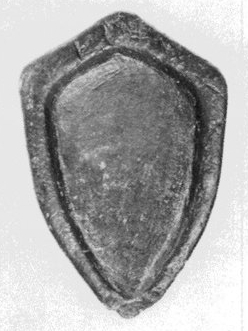
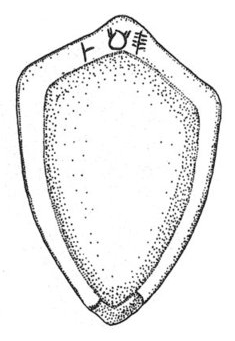

-
KYZa2
Names
KYZa2, KY Za 2
Support
Stone vessel
Location
Kythera
Findspot
Unavailable


Scribe
Unavailable
Context
Unavailable
Dimensions
Catalogue
Readings
1 1 0 DA none
1 1 0 MA none
1 1 0 TE none
𐘀𐙁𐘃
DAMATE
𐘀𐙁𐘃
DAMATE
KY Za
2
(Piraeus M. 6588; BCH 118,
1994, 343-351;
Kadmos
34.2, 1995,
164; Sak.-Ol. 1994), stone ladle, serpentine (Ayios Georgios
peak
sanctuary)
DA-MA-TE
The word curves around the upper
point of the ladle but reads from the point of view of the person
holding the ladle in cupped hands (cf. PK Za 18, 20). The DA occurs to the
left of the
ladle's point, the MA-TE at the point itself.
Commentary © John Younger
References